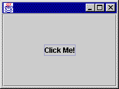

FRAGE 4:

No. The WindowQuitter object is registered
with the frame to receive window closing events, not
button click events (the "close button" of the frame is
not a JButton.
This program has a listener for the "close button" at the top right of the frame. Clicking it halts the program.
You can "copy-paste-save-and-run" the program in the usual way. Name the program ButtonDemo.java.
C:\> javac ButtonDemo.java C:\> java ButtonDemo C:\>
The entire frame is filled with the button! (We will fix this shortly.) You can move the mouse pointer over the button and click on it, and the button will appear to move in and out. But the program does nothing in response to that event.